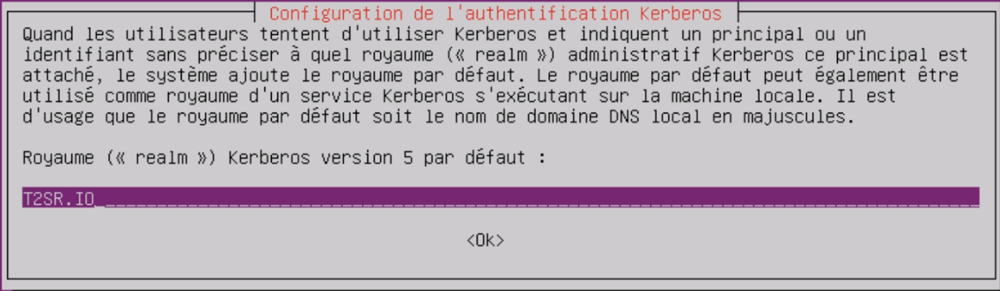
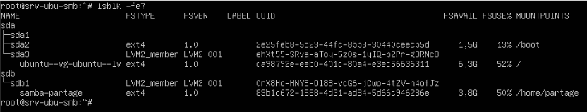
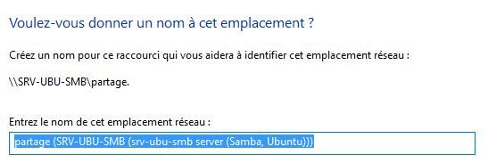

Serveur SAMBA
Objectif et environnement
Objectif
Note
L’installation et configuration un serveur de partage de fichier SAMBA et impression sur Ubuntu serveur.
Environnement
Matériels :
Dell PowerEdge r240 avec Proxmox 7.1-7
Adressage des VMS :
Réseaux : 172.16.0.0/16
Serveur Samba et impression : SRV-UBU-SMB 172.28.1.202/16
Client Debian 1 : clideb1 172.28.2.1/16
Documentation :
Processus
Installation
J’ai créé une sauvegarde en faisant :
sudo cp /etc/netplan/00-installer-config.yaml
/etc/netplan//00-installer-config.yaml.bkp
Dans le fichier /etc/netplan/00-installer-config.yaml

sudo netplan apply
Installation des logiciels d’authentification sur le domaine
sudo apt install acl realmd libnss-winbind winbind
Créer l’espace de stockage des partages

Création nouvelle partition
Créer le groupe de volumes LVM
vgcreate samba /dev/sdb1
Joindre la machine virtuelle au domaine
Installer Kerberos
sudo apt install krb5-user

On a édité le fichier /etc/krb5.conf


Installation SAMBA
sudo apt update && sudo apt upgrade -y
sudo apt install -y samba
Modifier le fichier /etc/samba/smb.conf


sudo apt install -y ntp
On a modifié le fichier /etc/ntp.conf comme suite :
Redémarrer ntp et smbd
service ntp restart
service smbd restart
Nous avons rentré notre serveur samba dans le domaine
net ads join -S SRV-W19-AD -U Administrateur joined srv-ubu-smb to realm t2sr.io
Configurer NSS
service winbind restart
Nous avons modifié le fichier /etc/nsswitch.conf

Pour vérifier si tout est fonctionnel jusqu’au présent

Préparation PAM

pam-auth-update

Nous avons sélectionné Non.
Nous avons modifié le fichier /etc/pam.d/common-auth

Nous avons modifié le fichier /etc/pam.d/common-password

Nous avons modifié le fichier /etc/pam.d/common-session

Configuration du fuseau horaire (choix France/Paris)
sudo dpkg-reconfigure tzdata
sudo reboot
Vérification espace de partage disponible
sudo vgdisplay \> vgdisplay.txt
vim vgdisplay.txt

Création du partage
Création du volume logique
lvcreate -n partage -L 9.9G samba
Retour de la commande :
Rounding up size to full physical extent 9.90 GiB Logical volume “partage” created.
Formatage de la partition
Montage du volume logique
Récupération ID du disque

Nous avons ajouté le fichier /etc/fstab pour un montage automatique
Montage de toutes les partitions et vérifier le montage
Astuce
Retirer l’espace réservé pour root, inutile de le gardé dans notre cas.
tune2fs -m 0 /dev/mapper/samba-partage
Définition des droits d’accès avec les ACL

Création d’un groupe sur l’Active Directory
En prévision des définitions ACL j’ai créé un groupe nommé partage sur l’AD
Puis j’ai ajouté deux membres
Définition ACL sur la racine du partage
setfacl -R -m g:"T2SR\smbpartage":rwx /home/partage
Avertissement
T2SR\smbpartage – partage correspond au nom groupe précédemment créé
Définition ACL par défaut du partage
setfacl -R -m d:g:"T2SR\smbpartage":rwx /home/partage
Modification du Samba

Redémarrage le service Samba
sudo systemctl restart smbd
Test partage avec un client Debian
+ Autre emplacements
Nous avons renseigné le dossier partage
Si le fichier /etc/hosts est bien renseigné, on peut se connecter par le nom aussi
Test partage avec un client Windows
J’ai ajouté un emplacement réseau

Intégrer Samba dans Active Directory

NB : le procédé d’intégration est expliqué dans le chapitre Active Directory.
Conclusion
La mise en place d’un serveur de partage est complexe si on souhaite synchroniser les accès et droits avec un Active Directory.